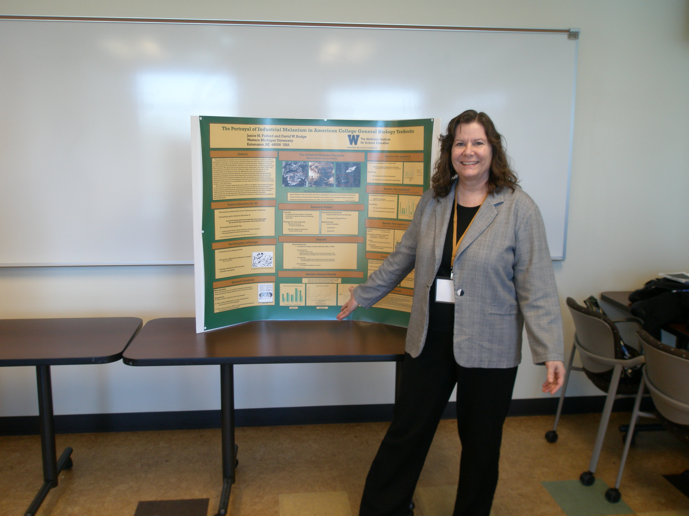

Janice M. Fulford and David W. Rudge The Mallinson Institute for Science Education
|
|
| Abstract: American general biology textbooks often cite the phenomenon of industrial melanism as a particularly well-documented example of natural selection. The phenomenon was introduced into textbooks in the early 1960's in the wake of H.B.D. Kettlewell's pioneering work on the subject, and became ubiquitous throughout the 1970s, 1980s and 1990s. Textbooks have been criticized for ignoring problems in Kettlewell's original investigations, despite recent work by scientists that broadly supports Kettlewell's initial conclusions. Rudge (2000) has argued that these criticisms, far from undermining use of this example, actually augment its value for science teaching. In a previous paper we drew attention to how visual imagery highlighted features that make it ideal for teaching (Rudge & Fulford, 2011). The current project continues this investigation with an analysis of industrial melanism passages in textbooks from the 1960's to the 2000's. In addition to examining textbooks by decade, three series are inspected for change across time. The analysis determines if the textbooks follow the standard version formulated by Majerus (1998). The analysis also examines what nature of science aspects are included in the passages. The results of the study supports the view that there is a classic textbook account of industrial melanism, and in spite of ongoing research the science content is generally not updated and the nature of science concepts are usually not included. | |
| PUBLICATIONS | |
| 2013 | Rudge, D.W., Cassidy, D.P., Fulford, J. M. & Howe, E.M. Changes Observed in Views of the Nature of Science During a Historically Based Unit. Science & Education -available on-line. |
| 2011 | Rudge, D. W. & Fulford, J.M. The Role of Visual Imagery in Textbook Portrayals of Industrial Melanism. Pp. 630-637 In Seroglou, F., Koulountzos, V. & Siatras, A. (eds.) Science & Culture: Promise, Challenge and Demand, Book of Proceedings for the Eleventh International History, Philosophy & Science Teaching (IHPST) and Sixth Greek History, Philosophy and Science Teaching Joint Conference, Aristotle University, Thessaloniki, Greece, 1-5 July 2011, Epikentro Publications.- Presidential Address |
| 2011 | Fulford, J.M. & Rudge, D.W. Rivers on Fire: Icebergs Melting, Using the History of Science to Teach the Nature of Science. Pp 247-251 In Seroglou, F., Koulountzos, V. & Siatras, A. (eds.) Science & Culture: Promise, Challenge and Demand, Book of Proceedings for the Eleventh International History, Philosophy & Science Teaching (IHPST) and Sixth Greek History, Philosophy and Science Teaching Joint Conference, Aristotle University, Thessaloniki, Greece, 1-5 July 2011, Epikentro Publications. |
| PRESENTATIONS | |
| Fulford, J. M. & Rudge, D.W. "Assessing the Impact of Historical Story Telling on Student Learning", 10th International Conference on History of Science & Science Education: History & Inquiry., University of Minneapolis, Minneapolis, MN, 22 Jul 2014. - talk | |
| Fulford, J.M. & Rudge, D. W. "The Depiction of the Phenomenon of Industrial Melanism in Textbooks" Twelfth Biennial Meeting of the International History, Philosophy & Science Teaching Group (IHPST), University of Pittsburgh, Pittsburgh, PA, 20 Jun 2013 - poster | |
| Fulford, J.M. & Rudge, D. W. "The Depiction of the Phenomenon of Industrial Melanism in Textbooks" Annual International Conference of the National Association for Research in Science Teaching (NARST) Rio Grande, Puerto Rico, April 7, 2013- poster | |
| Fulford, J. & Rudge, D. "The Portrayal of Industrial Melanism in American College Biology Textbooks." Second Annual Graduate Humanities Conference, Western Michigan University, Kalamazoo, MI, 22 Mar 2013 - poster | |
| Fulford, J.M. & Rudge, D. W. "The Depiction of the Phenomenon of Industrial Melanism in Textbooks" Annual Meeting of the Association for Science Teacher Education, Charleston, SC, January 10-12, 2013. | |
| Rudge, D. W., Cassidy, D.P., Fulford, J.M & Howe, E.M. "Assessing the Impact of a Historically Based Unit on Preservice Teachers' Views of the Nature of Science", Teaching Science through the History & Philosophy of Science. Boston University Interdisciplinary Conference, Boston University, Boston, MA on December 7, 2012. - paper | |
| Rudge, D.W., Cassidy, D.P., Fulford, J.M. & Howe, E.M. "Assessing the Impact of the Explicit Reflective Approach to Teaching the Nature of Science", Ninth International Conference for the History of Science in Science Education: Enabling Scientific Understanding through Historical Instruments and Experiments in Formal and Non-Formal Learning Environments, Flensburg University, Flensburg, Germany on July 30, 2012.- paper | |
| Fulford, J.M. & Rudge, D.W. "The Depiction of the Phenomenon of Industrial Melanism in American Biology Textbooks." Ninth International Conference for the History of Science in Science Education: Enabling Scientific Understanding through Historical Instruments and Experiments in Formal and Non-Formal Learning Environments, Flensburg University, Flensburg, Germany on July 31, 2012. -poster | |
| Rudge, D.W. & Fulford, J.M. "The Role of Visual Imagery in Textbook Portrayals of Industrial Melanism" Mathematics and Science Education, Middle Tennessee State University, Murfreesboro, TN, April 10, 2012.- invited seminar, paper | |
| Rudge, D. W. & Fulford, J.M. "The Role of Visual Imagery in Textbook Portrayals of Industrial Melanism", Department of Biological Sciences, Western Michigan University, Kalamazoo, MI, October 21, 2011. | |
| Rudge, D. W. & Fulford, J.M. "The Role of Visual Imagery in Textbook Portrayals of Industrial Melanism", 2011 Annual Conference of SHARP, Washington D.C. July 16, 2011. | |
| Fulford, J.M. & Rudge, D.W. "Rivers on Fire: Icebergs Melting, Using the History of Science to Teach the Nature of Science." Eleventh International History, Philosophy & Science Teaching (IHPST) and Sixth Greek History, Philosophy and Science Teaching Joint Conference, University of Thessaloniki, Thessaloniki, Greece, July 2, 2011.- poster presentation | |
| Rudge, D. W. & Fulford, J.M. "The Role of Visual Imagery in Textbook Portrayals of Industrial Melanism", Eleventh International History, Philosophy & Science Teaching (IHPST) and Sixth Greek History, Philosophy and Science Teaching Joint Conference, University of Thessaloniki, Thessaloniki, Greece, July 1, 2011.- Presidential Address, paper | |
Last updated on 29 Jul 2014.